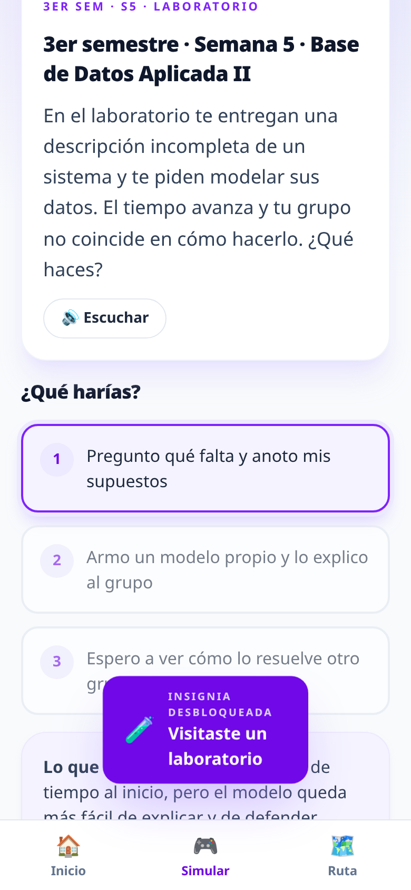
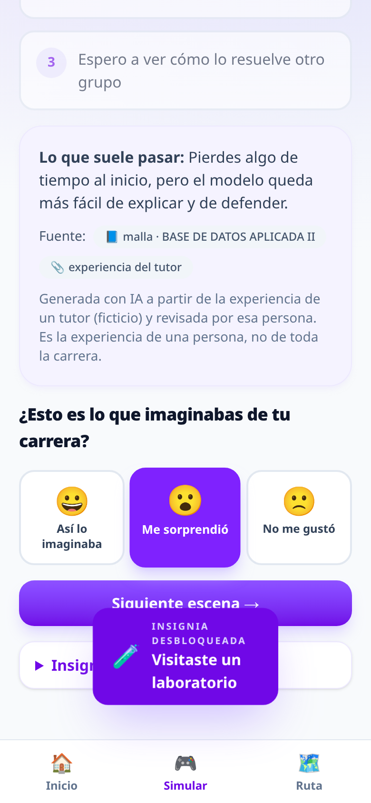

Explorar antes de decidir
🎮
Simulación sin presión
escenas reales de la malla, contadas por tutores
✨
Brechas con IA
lo que esperabas vs. lo que viene, en palabras
🤝
Acompañamiento humano
el estudiante decide qué compartir; el tutor acuerda un paso


educadex · Desafío 2 · Hackathon IA Congreso Social UC 2026